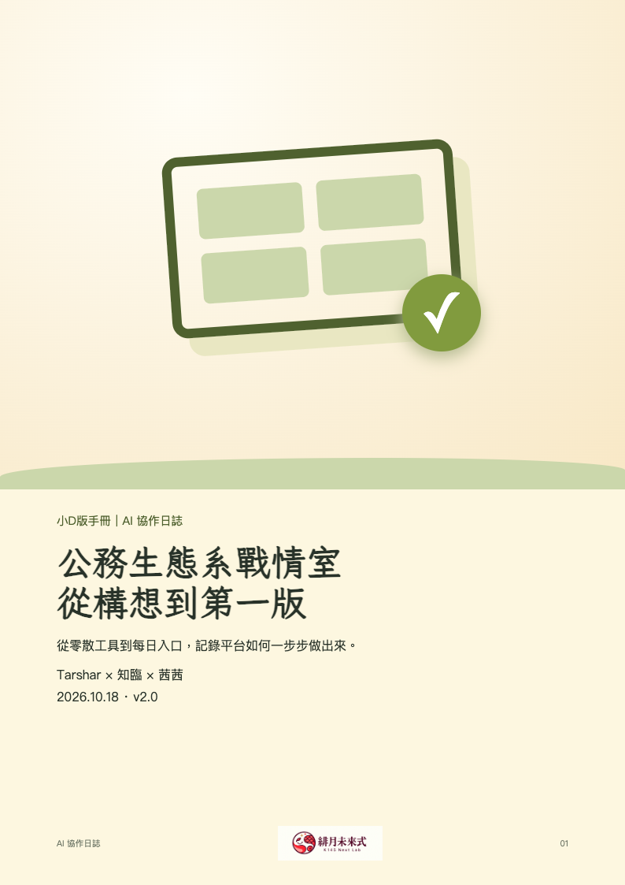

從需求開始
說明為什麼需要每日工作入口，以及熟成局、Notion、Google 服務如何成為既有基礎。
AI 協作日誌 · 修訂版 v2.0
這份日誌記錄平台如何從需求、盤點、設計、建造到正式上線。小插曲收進附註，主線聚焦「這個工具怎麼被做出來」。

說明為什麼需要每日工作入口，以及熟成局、Notion、Google 服務如何成為既有基礎。
記錄需求收斂、工作卡規則、資料流程、入口整合、日曆與甘特圖的形成。
整理部署、操作驗證、茜茜覆核、目前限制，以及下一階段值得優先補上的工作。